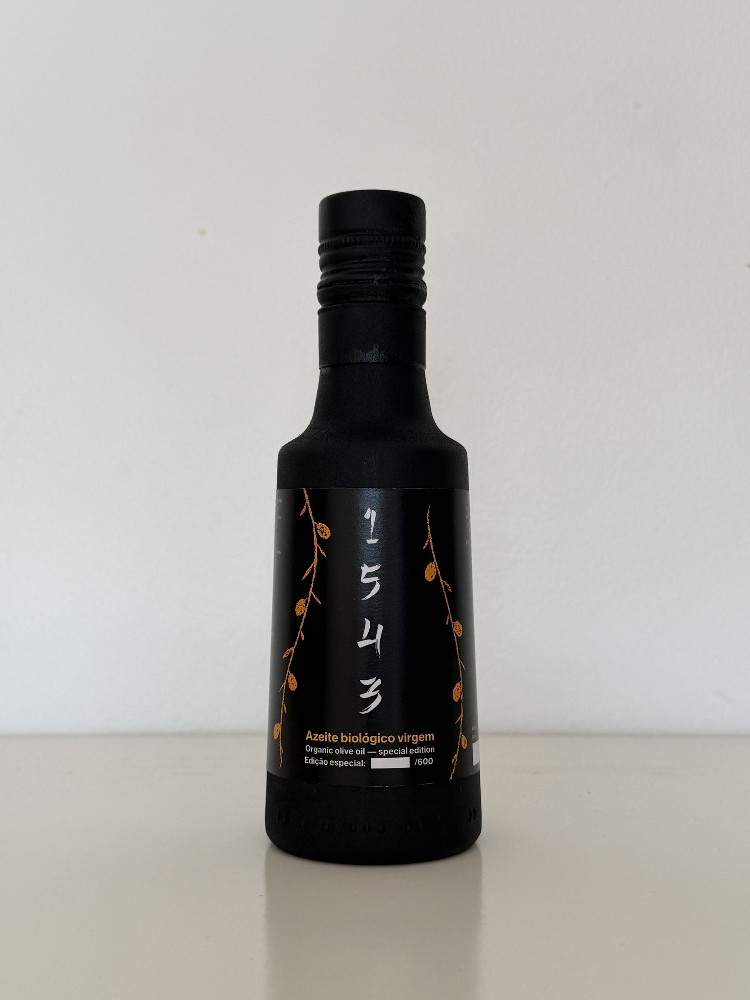
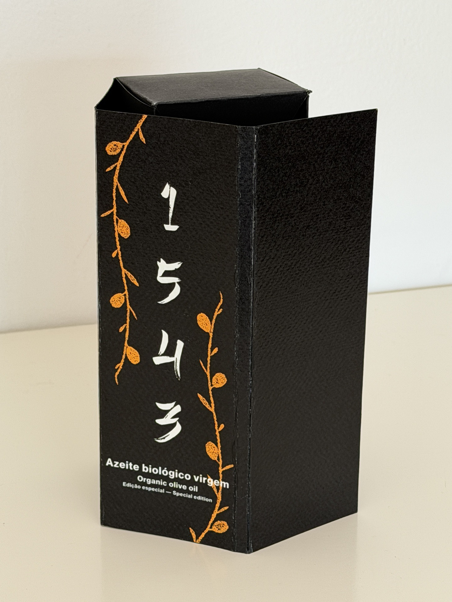
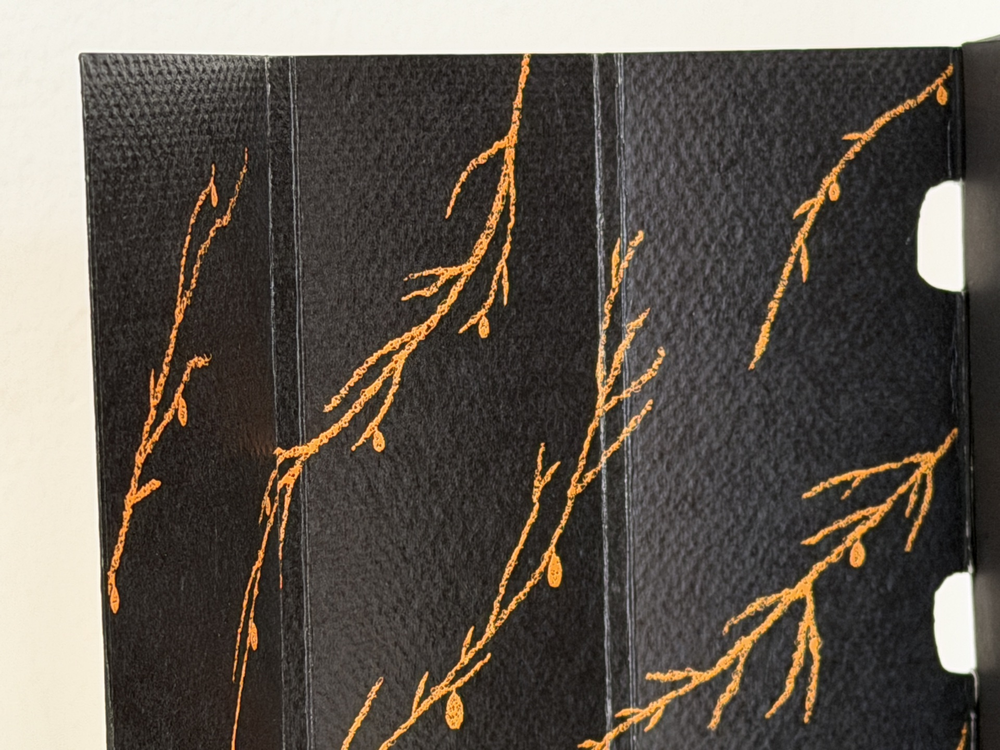
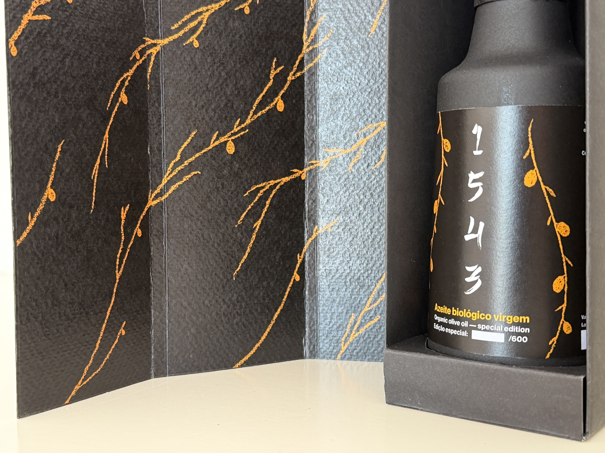

1543
Portugal and Japan, 1543.
Developed for an academic brief focused on special-edition packaging design. The challenge: create a label and packaging for a limited-edition olive oil celebrating the historic encounter between Portugal and Japan in 1543 — the year the first Portuguese landed in Japan, beginning one of the most significant cultural exchanges of the Age of Discovery.
To develop a packaging identity able to visually translate the dialogue between two distinct cultures — Portuguese and Japanese — into a coherent, contemporary piece with the presence of a premium product, carrying the historical weight of the 1543 encounter.
The final proposal builds on the visual tension between two opposite yet complementary aesthetic systems: the restraint and emptiness of Japanese tradition, and the ornamentation and expressiveness of Portuguese culture. The result is a special-edition package that uses typography, composition and materials to evoke that historic fusion.




